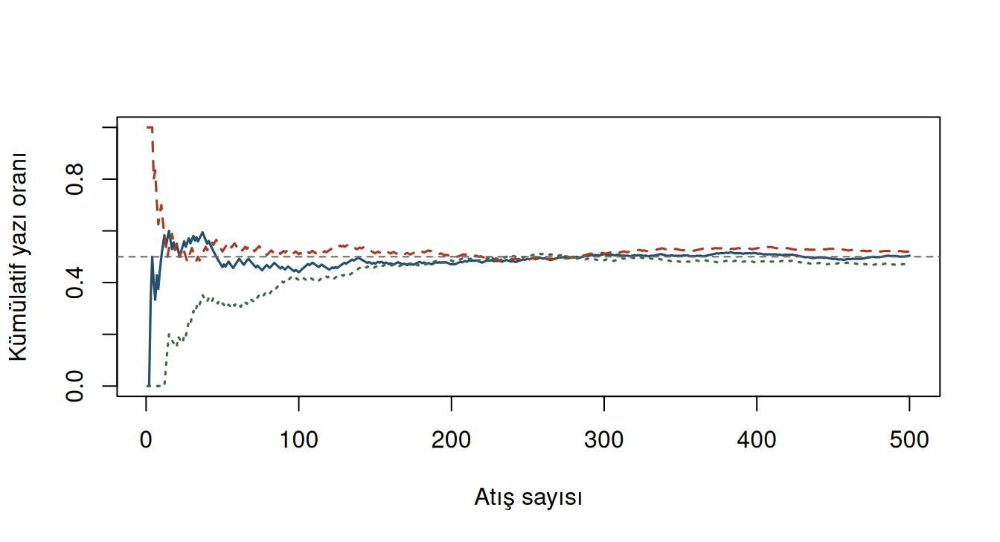

Bir belediye, son bir ay içinde otobüse binmiş yolcular arasından rastgele 100 kişi seçiyor. Yolcuların 0–10 ölçeğindeki ortalama memnuniyet puanı 7,2 çıkıyor. Hizmet koşulları ve araştırma tasarımı aynı kalsa, başka 100 yolcu seçildiğinde yine 7,2 mi bulunurdu?
Yolcuların puanları değişmese bile yeni grubun bileşimi değişebilir. Önceki örnekte yer almayan çok memnun veya memnuniyetsiz kişiler bu kez seçilebilir. Daha çok kişi seçildiğinde tek bir puanın ortalamadaki ağırlığı azalır. Aynı tasarım altında ortalama genellikle örnekten örneğe daha az dalgalanır. Ancak kayıtlar hep aynı dar yolcu grubundan geliyorsa sayılarını artırmak kapsam dışındaki görüşleri veriye taşımaz.
Bölüm 29 bölümünde bu dalgalanmayı 20 yolcudan çekilen iki örnekte gördük. Şimdi aynı kuralın üretebileceği bütün örnekleri düşünerek ortalamaların nerede toplandığını, ne kadar yayıldığını ve nasıl bir biçim aldığını inceleyeceğiz. Okur, bölüm sonunda ortalama ve oran için standart hatayı yorumlayabilecek ve bir benzetimin hangi teorik sonucu sınadığını açıklayabilecektir. Betimsel varyans ve beklenen değer kuralları ön bilgimizdir.
32.2 Örnekleme tasarımı neden önemlidir?
Çerçeve, seçimin fiilen yapılabildiği birimlerin listesidir. Bölüm 29 bölümündeki gibi bu liste hedef topluluğun bir kısmını dışarıda bırakabilir. Olasılıklı örneklemede çerçevedeki uygun birimlerin seçilme olasılıkları tasarımdan bilinir ve pozitiftir. Yerine koymadan basit rastgele örneklemede belirli büyüklükteki bütün örnek kümeleri eşit olasılıklıdır. Aynı yolcu bir kez seçilebilir. Yerine koyarak her çekime aynı listeden başlarsak aynı yolcu tekrar seçilebilir ve rastgeleleştirme her seferinde bağımsız uygulanabilir (Diez vd. 2019).
Gece hizmetini kullananları ayrıca duymak istiyorsak yolcuları gündüz ve gece kullanıcıları gibi örtüşmeyen tabakalara ayırıp her tabakadan rastgele seçim yapabiliriz. Tabakaların kendi içinde benzer, birbirinden farklı olduğu bir durumda bu tasarım, uygun örnek tahsisiyle aynı büyüklükteki basit rastgele seçime göre daha kesin sonuç verebilir. Örnekleme oranları farklıysa genel ortalama için tabaka ortalamalarını tabakaların anakütledeki paylarıyla ağırlıklandırırız.
Kent geneline dağılmış yolculara tek tek ulaşmak pahalıysa rastgele birkaç sefer küme olarak seçilebilir. Seçilen seferlerde tüm uygun yolcular veya rastgele bir alt grup incelenir. Tabakalı tasarımda her tabakadan bilgi gelirken bu tasarımda yalnız seçilen kümelerden bilgi gelir. Aynı seferdeki yolcular aynı gecikmeye maruz kaldığından yanıtları benzer olabilir. Yüz yolcuyu birkaç seferden seçmek bu durumda yüz bağımsız yolcudan daha belirsiz bir ortalama üretebilir (Diez vd. 2019).
İlk on kayıttan rastgele başlayıp her onuncu kaydı almak sistematik örneklemedir. Liste boyunca yayılır ve uygulaması kolaydır. Liste her on kayıtta tekrarlanan bir servis düzenine göre sıralıysa başlangıca bağlı olarak tek bir servis türünde yoğunlaşabilir. Açık bir anket bağlantısında ise seçim gönüllü katılıma bağlıdır. Böyle bir olasılıksız örneklemede katılım olasılıkları rastgele bir çekim kuralından bilinmez. Yanıt sayısı kapsamı veya katılımı kendiliğinden düzeltmez. Aşağıdaki standart hata formülleri belirli tasarımlara aittir. Tabakalar, ağırlıklar, kümeler veya sistematik seçim varsa varyans hesabı fiilen kullanılan tasarımı izlemelidir.
32.3 Bir istatistiğin dağılımı
20 yolcunun bekleme sürelerini bir sayı doğrusu üzerine koyarsak her nokta bir yolcunun süresidir. Şimdi her defasında altı yolcu seçip bekleme sürelerinin tek bir ortalamasını kaydettiğimizi düşünelim. İkinci sayı doğrusundaki her nokta artık bir örneklemin ortalamasıdır. İlk dağılım bireylerin deneyimleri, ikincisi tekrarlanan bir araştırmanın sonuçları hakkındadır (Ismay ve Kim 2020).
Bir istatistiğin örnekleme dağılımı, belirli bir anakütle ve seçim mekanizması altında istatistiğin alabileceği değerlerin olasılık dağılımıdır. Aynı fikir medyana, orana ve örneklem varyansına da uygulanır. Bunların her biri aynı veriyi başka bir kuralla özetler ve kendi örnekleme dağılımına sahiptir. Gerçek araştırmada çoğunlukla tek bir örnek görürüz. Teorik dağılım o araştırmanın gerçekten binlerce kez yapılmasını gerektirmez. Bilgisayar benzetiminde ise seçimi bir model altında tekrar ederek bu dağılımın yaklaşık görünümünü elde ederiz. Benzetim tekrarlarının sayısını artırmak, dağılımı daha iyi görmemizi sağlar. Teorik dağılımı değiştiren şey örneğin büyüklüğü, anakütle veya seçim kuralıdır.
32.4 Tahmin edici, yanlılık ve ortalama karesel hata
Anakütle ortalaması \(\mu\) sabit hedeftir. Örnek henüz seçilmeden önce ortalamayı hesaplama kuralı \(\bar X\) ile gösterilir. Bu tahmin edici, örnek değiştikçe değişen bir rassal değişkendir. Gözlenen 100 yolcu için \(\bar x=7{,}2\), kuralın bir kez uygulanmasıyla elde edilen tahmindir. Tek bir tahminin hedefin üstünde çıkması, kuralın tekrarlar boyunca yüksek tahmin üreteceği anlamına gelmez.
Herhangi bir hedef parametreyi \(\theta\), onu tahmin eden rassal kuralı \(\hat{\theta}\) ile gösterelim. \(E\) aynı tasarımın tekrarları üzerindeki beklenen değerdir. Dağılımın merkeziyle hedef arasındaki fark yanlılıktır:
Belediye yalnız gündüz yolcularını ölçüyorsa gündüz ortalamasını iyi tahmin edebilir. Ancak gündüz yolcuları sistematik olarak daha memnunsa tüm yolculara ilişkin tahminlerin merkezi yukarı kayar. Burada çerçeve kapsamı veri üretimindeki sorundur. İstatistiksel yanlılık ise bu tasarımdan çıkan tahminlerin beklenen değerinin tanımlı hedeften ne kadar saptığını anlatır.
\(\operatorname{MSE}\), ortalama karesel hatayı gösterir. Sonlu ikinci moment altında \(m=E(\hat{\theta})\) olsun. Hatayı \((\hat{\theta}-m)+(m-\theta)\) diye ayırabiliriz. Karesi açıldığında ilk parçanın beklenen karesi tahmin edicinin varyansıdır. Çapraz terim sıfır olur, çünkü \(E(\hat{\theta}-m)=0\). İkinci parça sabittir ve karesi yanlılığın karesidir:
Hedefi 8, varyansı 4 olan yanlısız bir tahmin edicinin sonucunu sabit 6 ile eşit ağırlıkta ortalayalım. Yeni kuralın beklenen değeri 7, yanlılığı −1 ve varyansı 1 olur. MSE 4’ten 2’ye düşer. Gerçek hedef 12, ilk kuralın varyansı yine 4 olsaydı, ikinci kural 9 çevresinde toplanır ve MSE 10 olurdu. Varyansı azaltmanın yararı, hedefi hatalı bir değere doğru ne kadar çektiğimize bağlıdır.
32.5 Örneklem ortalaması ve standart hata
\(X_i\), \(i\) numaralı rassal ölçüm olsun. \(n\) gözlem aynı dağılımdan geliyor ve ortak sonlu ortalamaları \(\mu\), ortak sonlu varyansları \(\sigma^2\) olsun. Bölüm 31 bölümündeki doğrusallığa göre her ölçümün beklenen değere katkısı \(\mu/n\) olur:
Bu beklenen değer için ortak ortalama yeterlidir. Varyans hesabında ayrıca bağımsızlığı kullanalım. Böylece toplamın varyansı bileşenlerin varyanslarının toplamıdır. Toplamı \(1/n\) ile çarpmak varyansını \(1/n^2\) ile çarpar:
Aynı dağılım varsayımı her ölçümü aynı \(\mu\) ve \(\sigma^2\) ile temsil etmemizi sağlar. Bağımsızlık birlikte değişim terimlerini sıfırlar. Ölçümler örneğin aynı gecikmeyi paylaşan yolculardan gelirse bu terimler sıfır olmayabilir (Diez vd. 2019).
Bir istatistiğin örnekleme dağılımının standart sapması standart hata ya da \(\operatorname{SE}\) olarak adlandırılır. Bağımsız ortalama için varyansın karekökü alınır. \(\sigma\) bilinmiyorsa, Bölüm 30 bölümündeki örneklem standart sapması \(s\) ile standart hatayı tahmin edebiliriz:
İlk ifade modelde sabittir. İkincisi, \(s\) örnekten örneğe değiştiği için kendisi de değişir. Bireysel yolcu puanlarının standart sapması 2 ise 100 bağımsız gözlemden oluşan ortalamanın standart hatası 0,20 puandır. Aynı koşullarda 400 gözlemde paydadaki karekök iki katına çıkar ve standart hata 0,10 olur. Bireysel puanların yayılımı hâlâ 2 puandır. Standart sapma bireylerin yayılımını, ortalamanın standart hatası ise tekrar edilen araştırmaların ortalamalarındaki yayılımı anlatır (Ismay ve Kim 2020).
32.6 Sonlu anakütle düzeltmesi
5.1’deki 20 yolcuyu sabit bir liste olarak ele alalım. \(N\) liste büyüklüğü, \(y_i\) listedeki \(i\). süre ve \(\mu\) listenin ortalaması olsun. Varyansı \(N\) böleniyle tanımlayalım:
Yerine koymadan basit rastgele seçimde her çekim sırası, tek başına, listeyi eşit olasılıkla temsil eder. Bir yolcunun seçilmesi kalan listenin bileşimini değiştirir. Örnek listeyi daha fazla kapsadıkça dışarıda kalabilecek yolcu sayısı azalır ve ortalama daha az dalgalanır. İlk seçimin ortalamadan farkı pozitifse kalan listenin ortalaması düşer. İlk fark \(y_i-\mu\) ise, kalanların merkezinin farkı bunun negatifinin \(N-1\)’e bölümüdür. Bu farkla ilk çekimin farkını çarpıp bütün ilk seçimler üzerinden ortalayınca iki farklı çekimin kovaryansı \(-\sigma_N^2/(N-1)\) olur. Kovaryans, merkezlenmiş iki değerin çarpımının beklenen değeridir.
Toplamın varyansında \(n\) tek-çekim katkısı ve \(n(n-1)\) sıralı çiftin kovaryansı vardır. Bunları toplayıp \(n^2\)’ye bölünce \(N>1\) ve \(1\leq n\leq N\) için:
İkinci çarpan varyansın sonlu anakütle düzeltmesidir. Standart hata için onun karekökünü kullanırız. Örnek listeye göre küçükse çarpan bire yakındır. \(n=N\) olduğunda sıfır olur. Tüm liste alınırsa örnek bileşimi değişmez ve aynı ortalama elde edilir. Ölçüm hatası veya kapsam eksiği tam sayımda da bulunabilir. Bu düzeltmenin biçimi burada kullanılan \(N\) bölenine ve yerine koymadan basit rastgele seçime bağlıdır.
32.6.1 Simülasyon A · Standart hata ve seçim biçimi
Dört farklı büyüklük için iki seçim tasarımını 10.000 kez tekrarlayalım. Her tekrar aynı 20 kişilik listeyle başlar. Yerine koymadan çekimde yalnızca tekrar içinde bir yolcu ikinci kez seçilemez. Her sütunun benzetim değeri, 10.000 ayrı örnek ortalamasının standart sapmasıdır.
Benzetimler ilgili teorik standart hatalara yakındır. Yerine koymadan seçimin etkisi örnek listeyi kapladıkça belirginleşir. Son satırda bu yöntem her seferinde 25 dakikayı verir. Yerine koyarak 20 çekim yapmak ise 20 farklı yolcuyu görmeyi garanti etmediği için standart hata pozitif kalır. Teori ile benzetim arasındaki küçük farklar, sonlu sayıda tekrarın getirdiği Monte Carlo değişkenliğidir.
32.7 Büyük sayılar yasası
Yazı için 1, tura için 0 kaydedersek ilk \(n\) atışın ortalaması kümülatif yazı oranıdır. Tek tek atışların 0 veya 1 olma özelliği değişmez. Büyük sayılar yasası, bağımsız, aynı dağılımdan gelen ve sonlu mutlak beklentili gözlemlerde ortalamanın gerçek ortalamaya yakınsamasını anlatır. Herhangi bir sabit pozitif tolerans seçersek ortalamanın hedeften o toleranstan fazla uzaklaşma olasılığı, \(n\) büyürken sıfıra yaklaşır (Diez vd. 2019).
İlk iki atışın biri yazıysa oran 0,50’dir. Üçüncü atış da yazı gelirse oran yaklaşık 0,67’ye çıkar ve hedeften uzaklaşır. Yasa, her yeni gözlemde yakınlaşma sözü vermez. Aşağıda 500 atışlık üç bağımsız adil para dizisinin büyüyen ilk kısımlarını izliyoruz.
set.seed(5402)atilis <-500dizi <-replicate(3, rbinom(atilis, size =1, prob =0.5))oran_yollari <-apply(dizi, 2, cumsum) /seq_len(atilis)matplot(seq_len(atilis), oran_yollari, type ="l", lty =1:3,lwd =1.6, col =c("#23506A", "#A33D29", "#416943"),xlab ="Atış sayısı", ylab ="Kümülatif yazı oranı",ylim =c(0, 1))abline(h =0.5, lty =2, col ="grey40")

Şekil 32.1: Yapay adil para modelinde üç bağımsız dizinin kümülatif yazı oranı. Kesikli yatay çizgi modeldeki yazı olasılığıdır.
Şekil 32.1 üzerindeki her çizgi aynı atış dizisini sürdürdüğü için komşu noktalar bağımsız değildir. Sonraki deneyde her büyüklük için tamamıyla yeni örnekler çekeceğiz. Bu sayede büyüyen bir diziyi izlemek yerine aynı büyüklükteki ortalamaların dağılımına bakabileceğiz.
32.8 Merkezi limit teoremi
Anakütle normal değilse ortalamaların dağılımı neden normale yaklaşabilir? Sağa çarpık bir bekleme süresi modelinde tek bir yolcu bazen çok uzun bekler. Bağımsız birçok kişinin ortalamasında uzun süre daha kısa sürelerle birlikte hesaba girer. Varyansın küçülmesi ortalamaların merkezde toplanmasını açıklar. Biçimi belirlemek için daralmayı hesaptan çıkarmamız gerekir.
Bağımsız ve aynı dağılımdan gelen, sonlu ortalamalı ve sonlu pozitif varyanslı gözlemler için klasik merkezi limit teoremi şöyledir:
Solda ortalamanın merkezden farkı, kendi standart hatası olan \(\sigma/\sqrt n\) ile ölçeklenir. \(\xrightarrow{d}\), dağılımda yakınsamayı gösterir. \(n\) büyüdükçe standartlaştırılmış ortalamanın herhangi bir sabit eşiği aşmama olasılığı, standart normal modelin aynı eşikteki birikimli olasılığına yaklaşır. Büyük sayılar yasası ortalamanın nereye yığıldığını açıklar. Merkezi limit teoremi küçülen dalgalanmayı yeniden ölçeklediğimizde dağılımın biçiminin neye yaklaştığını söyler (Diez vd. 2019).
32.8.1 Simülasyon B · Daralma ile biçim değişimi
Varsayımsal bir hizmette tek kişinin bekleme süresi sağa çarpık üstel dağılımdan gelsin. Ortalama ve standart sapma 8 dakikadır. R’de hız parametresi \(1/8\) kullanılır. Her \(n\) için 12.000 bağımsız örnek oluşturuyoruz. Her örneğin içindeki süreler de aynı üstel modelden bağımsız çekiliyor. \(n=1\) panelindeki her ortalama tek bir süredir, dolayısıyla başlangıç dağılımını gösterir.
Teorik standart hata \(n=1\) için 8, \(n=100\) için 0,8 dakikadır. Benzetim de benzer yayılımlar verir. Şekil 32.2 bu daralmayı ortak dakika ekseninde gösteriyor. Histogramlar tüm benzetim değerlerinden hesaplanıyor, görünüm ise 0–25 dakikaya odaklanıyor.
Şekil 32.2: Yapay üstel modelden her örneklem büyüklüğü için 12.000 tekrar. Örneklem ortalamaları ortak dakika ekseninde, 0–25 dakika aralığında gösteriliyor.
Şekil 32.3 ise aynı ortalamaları teorik standart hatayla ölçeklendiriyor. Bütün paneller aynı birimsiz eksende ve aynı standart normal başvuru eğrisiyle gösteriliyor. İlk panel güçlü biçimde çarpıkken büyük örneklerde simetri artıyor ve histogram eğriye yaklaşıyor. Böylece daralma ile biçim değişimini ayrı okuyabiliyoruz.
Şekil 32.3: Aynı yapay örneklerin standartlaştırılmış ortalamaları. Çizgi standart normal yoğunluktur. Ortak görünüm −4 ile 5 arasındadır.
\(n=30\) evrensel bir eşik değildir. Nadir fakat çok uzun bekleyişler varsa örneklerin çoğu bunların hiçbirini içermeyebilir. Başlangıçtaki çarpıklık ve kuyruklar yakınsamanın pratik hızını etkiler. Bağımlı gözlemlerde klasik bağımsız sonuç doğrudan kullanılamaz. Sonsuz varyanslı bir modelde bu standartlaştırma için gereken \(\sigma\) sonlu değildir. Bu benzetimde ham süreler bütün panellerde aynı çarpık süreçten geliyor. Normale yaklaşan biçim, standartlaştırılmış örneklem ortalamasına aittir.
32.9 Örneklem oranının dağılımı
Memnun yolcuları 1, diğerlerini 0 olarak kodlayalım. \(X\) memnun yanıt sayısı, \(n\) toplam yanıt sayısı ve \(p\) modeldeki memnuniyet olasılığıdır. \(\hat p=X/n\) bu ikili puanların ortalamasıdır. Bölüm 31 bölümündeki bağımsız Bernoulli modelinde \(X\) binom dağılır. Beklenen değeri \(np\), varyansı \(np(1-p)\) olur. \(n\)’ye bölmek beklenen değeri \(n\)’ye, varyansı \(n^2\)’ye böler:
Oran 0 ile 1 arasındadır ve yalnızca \(1/n\) aralıklarla değişebilir. %2 başarı olasılığıyla 30 bağımsız denemede beklenen başarı sayısı 0,6’dır. Sıfır başarı görülmesi olasıdır ve sıfırın solunda gözlem bulunamaz. Bu sınırdaki yığılma simetrik bir normal yaklaşımla iyi temsil edilmez.
Örneklerin yaklaşık %55’inde hiç başarı görülmez. \(np\) ve \(n(1-p)\) beklenen başarı ve başarısızlık sayılarıdır. İkisinin de yeterince büyük olması sınırda yığılma riskinin azalması açısından yararlı bir kılavuzdur. Sabit bir eşik bütün durumlar için doğruluk garantisi vermez. Özellikle kuyruk olasılıklarında ve 0 ile 1’e yakın oranlarda binom dağılımıyla doğrudan karşılaştırmak daha açıklayıcıdır. Bu ayrım 5.5’te oran güven aralığı seçerken önem kazanacak.
32.10 Hatalı yorumlar ve çıkarım sınırları
Ortalama 7,2 diye raporlayan belediye, yolcu puanlarının yayılımını ve ortalamanın standart hatasını ayrı vermelidir. Birkaç seferden gelen yolcular ortak koşulları paylaşıyorsa bağımsız seçim formülü uygun olmayabilir. Ortalama önceki araştırmadan farklı çıkarsa bu fark, örnekten örneğe beklenen dalgalanmayı veya hizmet koşullarındaki gerçek bir değişimi yansıtabilir. Tek bir karşılaştırma, tahmin edicinin beklenen değerinin hedeften ayrıldığını kanıtlamaz.
Bir uygulama yalnız yoğun saatlerde veri topluyorsa aynı saatlerde ölçüm sayısını artırmak tahmini daha istikrarlı yapabilir. Büyük sayılar yasası o ölçüm sürecinin ortalamasına yakınlaşmayı anlatır. Merkezi limit teoremi de uygun koşullarda standartlaştırılmış dalgalanmanın biçimini açıklar. Tüm gün hakkında konuşmak için kapsam sorusunu önce çözmek gerekir. Küçük bir standart hata, dar bir alt grubu bütün topluluğun yerine geçirmez.
32.11 Egzersizler
Kolay. Her bölgeden ayrı rastgele yolcu seçmek ile bazı seferleri rastgele seçip onların yolcularını incelemek arasındaki farkı açıklayın. Yolcuların aynı seferde benzer yanıt vermesi neden önemlidir?
Kolay. 100 yolcudan elde edilen 7,2 puanı düşünün. \(\mu\), \(\bar X\) ve \(\bar x\) neyi ifade eder? Başka örnekte 7,0 bulunması yanlılığı gösterir mi?
Orta. Bağımsız puanların standart sapması 2,4 olsun. \(n=36\) ve \(n=144\) için ortalamanın standart hatasını bulun. 144 kişilik örneklemde \(s=2{,}1\) ise tahmini standart hatayı hesaplayın.
Orta. 20 kişilik listeden yerine koymadan iki yolcu seçin. R’de bütün ikililerin ortalamalarının standart hatasını teorik sonuçla karşılaştırın. R’nin varsayılan örneklem standart sapması neden tam dağılımı doğrudan özetlemez?
Orta. İlk tahmin edici yanlısız ve varyansı 4. İkinci tahmin edicinin yanlılığı −1,5 ve varyansı 1. MSE’leri karşılaştırın. İkinci kuralın dağılımı hangi anlamda daha dar ve hangi anlamda hedeften uzaktır?
Orta. Adil para atışlarında kümülatif yazı oranı 0,50’den uzaklaşan bir adım gösterin. Büyük sayılar yasasının ve merkezi limit teoreminin bu deney hakkında cevapladığı farklı soruları yazın.
Zor. Üstel modelde \(n=16\) için teorik standart hatayı hesaplayıp 6.000 yeni bağımsız örnekle doğrulayın. Ortalama farklarını teorik standart hatayla ölçeklendirince çıkan yayılım, tek başına normal biçimi doğrular mı?
Zor. Açık internet anketinde 5.000 yanıttan 7,2 bulundu. Belediye “çok yanıt aldığımız için tüm yolcuları temsil ediyor ve MLT sayesinde bireysel puanlar normal” diyor. Eksik dayanakları belirleyin ve kapsamı doğru tanımlayan kısa bir sonuç yazın.
32.12 Egzersiz çözümleri
1. Her bölgeden seçim tabakalıdır. Bölgeler arası farklılığı hesaba katmak uygun ağırlıklarla kesinliği artırabilir. Bazı seferleri seçmek küme örneklemesidir. Aynı gecikmeyi yaşayan yolcuların puanları birlikte değişiyorsa bağımsızlık formülü belirsizliği olduğundan küçük gösterebilir.
2.\(\mu\) tanımlı anakütlenin ortalama puanıdır. \(\bar X\), seçilebilecek her örneğe ortalamasını atayan tahmin edicidir. \(\bar x=7{,}2\) eldeki tahmindir. Farklı sonuçlar örnek bileşiminin değişmesinden gelebilir. Yanlılık, tahmin edicinin dağılımının merkezinin hedeften sapmasıdır.
3. Teorik değerler \(2{,}4/\sqrt{36}=0{,}4\) ve \(2{,}4/\sqrt{144}=0{,}2\) puandır. Büyüklüğü dörtle çarpmak standart hatayı yarıya indirir. Son örneğe dayanan tahmin \(2{,}1/12=0{,}175\) puandır. Bu hesap \(\sigma\) yerine o örnekteki \(s\) ile yapılır.
4. Bütün ikililer eşit olasılıklıdır. Tam dağılımın varyansı, ikili ortalamaların kareli sapmalarını ikili sayısına bölerek bulunur. R’nin örneklem standart sapması ise gözlem sayısının bir eksiğini kullanır.
ikili <-combn(bekleme, 2, FUN = mean)c(tam_se =sqrt(mean((ikili -mean(ikili))^2)),formulle = sigma_sonlu /sqrt(2) *sqrt((N -2) / (N -1)))
tam_se formulle
5.071593 5.071593
Sonuçlar aynıdır. Bir örnekten varyans tahmin etmek yerine tasarımın mümkün kıldığı bütün ikilileri saydık.
5. İlk MSE 4, ikincisi \(1+(-1{,}5)^2=3{,}25\) olur. İkinci kural daha az dalgalanır ve bu durumda karesel hata bakımından daha iyidir. Buna rağmen dağılımının merkezi hedefin 1,5 birim altındadır.
6. İlk iki atışın biri yazı ve üçüncüsü de yazıysa oran 0,50’den yaklaşık 0,67’ye çıkar. Büyük sayılar yasası sabit bir tolerans dışında kalma olasılığının büyük \(n\) için azalmasını açıklar. Merkezi limit teoremi büyüklüğü \(n\) olan yeni örnekleri düşünerek ölçeklenmiş oranların dağılımının hangi biçime yaklaştığını açıklar.
7. Teorik standart hata \(8/\sqrt{16}=2\) dakikadır. Benzetim ortalamalarının standart sapması 2 dakikaya, standartlaştırılmış ortalamalarınki 1’e yakın olmalıdır.
Ölçekleme yayılımı birim ölçeğine getirir. Normal biçim için ayrıca simetriye ve kuyruk davranışına bakmak gerekir.
8. Katılımcıların seçilme olasılıkları bilinmiyor. Kapsam, gönüllü katılım ve bağımlılık değerlendirilmemiş. MLT uygun koşullarda standartlaştırılmış ortalamanın biçimiyle ilgilidir. “Açık internet anketine yanıt veren 5.000 yolcunun ortalama puanı 7,2’ydi. Kapsam ve katılım mekanizması doğrulanmadığından sonuç yanıtlayanların deneyimini betimler.”
32.13 Bölüm özeti
Örnekleme dağılımı, aynı kuralın üretebileceği sonuçları ve olasılıklarını gösterir. Standart hata bu dağılımın yayılımını ölçer. Bağımsız ortalamalarda \(1/\sqrt n\) davranışı görülür. Sonlu listeden yerine koymadan seçimde, örnek listeyi kapladıkça yayılım daha da azalır. Büyük sayılar yasası ortalamanın hedefe yakınlaşmasını, merkezi limit teoremi standartlaştırılmış dalgalanmanın biçimini açıklar. Sonraki bölümde bu sonuçları, tahminlere belirsizlik aralığı eklemek için kullanacağız.
Diez, David, Mine Çetinkaya-Rundel, ve Christopher D. Barr. 2019. OpenIntro Statistics. 4. bs. OpenIntro. https://www.openintro.org/book/os/.